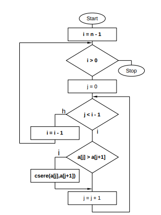

A buborékrendezés (angolul: Bubble sort) egy naiv algoritmus, amellyel egy véges (nem feltétlenül numerikus) sorozat – vagy számítástechnikai szóhasználattal élve egy tömb – elemei sorba rendezhetők [(n-1)n]/2 összehasonlítás elvégzésével, ahol n a sorozat elemeinek számát jelenti.
Az algoritmus alkalmazásának feltétele hogy a sorozat elemeihez létezzen egy rendezési reláció.
A tömböt az elejétől vizsgálva az egymás után következő elemeket hasonlítja össze. Ha olyat talál, hogy a második elem kisebb, mint az első, megcseréli a két elemet. Így a nagy elemek mint egy 'buborék' haladnak a tömb vége felé, a helyükre. Ha eléri a tömb végét, újra indul elölről. A rendezés akkor fejeződik be, ha az újraindulás után már nem történt egyetlen csere sem.
A buborékrendezés egy egyszerű algoritmus, amelyet főleg az oktatásban használunk, mivel nem igazán hatékony. Elve, hogy egy „buborékkal” haladva a tömbben több menetben elölről hátra a buborékban szereplő két elemet felcseréljük, ha azok rossz sorrendben vannak.
all(szamok(item) for item in adat):
def buborek_rendezes(adat, csokkeno=False):
a = len(adat)
for i in range(a):
for n in range(0, a-i-1):
if (csokkeno and int(adat[n]) < int(adat[n+1])) or (not csokkeno and int(adat[n]) > int(adat[n+1])):
adat[n], adat[n+1] = adat[n+1], adat[n]
A program először az összes "szamok" változó "item" változóját egy for ciklusba az adat változószor futtatja le. A "buborek_rendezes" függvényben az "adat" és "csokkeno" argumentumat adjuk meg. az "a" változó megszámolja hány adat van, amit a for i ciklus annyiszor futtat le. Aztán a for "n" ciklus nullától az "a" változó és az "i-1"-szer futtatja le. Ha a "csokkeno" és az adatban lévő "n" változók nagyobbak mintha eggyel több lenne vagy "nem csokkeno" és az adatban lévő "n" változók kisebbek mintha eggyel több lenne, akkor az adat[n] és adat[n+1] egyenlő adat[n+1], adat[n]-nel.
Forrás: Barna István
